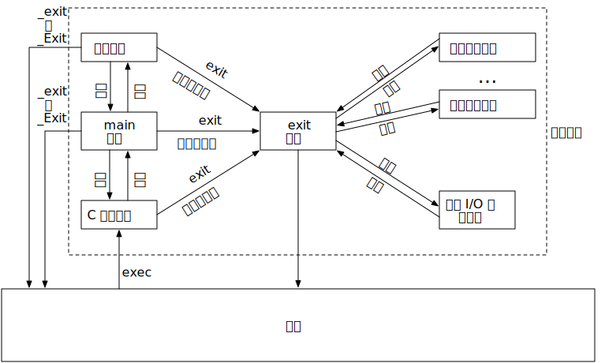

有 8 种方式使进程终止 (termination), 其中 5 种为正常终止：
异常终止有 3 种方式：
不管进程如何终止，最后都会执行内核中的同一段代码， 为相应进程关闭所有打开描述符，释放它所使用的存储器等
下图展示了，一个 C 程序是如何启动和终止的

注意，内核使程序执行的唯一方法是调用一个 exec 函数。 进程自愿终止的唯一方法是显示或隐式地（通过调用 exit）调用 _exit 或 _Exit 函数。 进程也可非自愿地由一个信号使其终止（上图没有显示）
根据上图我们可以知道：
exit(0); 和 return 0; 等价打印终止状态可在终端中输入 echo $?
ISO C 要求系统至少应支持 32 个终端处理程序 (exit handler). 为了确定一个给定的平台支持的最大终止处理程序数，可以使用 sysconf 函数
这些函数将由 exit 自动调用，可调用 atexit 函数来登记这些函数
exit 调用这些函数的顺序与它们登记时的顺序相反，
同一函数如若登记多次，则也会被调用多次
#include <stdio.h>
#include <stdlib.h>
#define err_sys(x) do { perror(x); exit(1); } while (0)
static void my_exit1(void);
static void my_exit2(void);
int main(int argc, char *argv[])
{
if (atexit(my_exit2) != 0)
err_sys("Can't register my_exit2");
if (atexit(my_exit1) != 0)
err_sys("Can't register my_exit1");
if (atexit(my_exit1) != 0)
err_sys("Can't register my_exit1");
printf("Main is done\n");
return 0;
}
static void my_exit1(void)
{
printf("First exit handler\n");
}
static void my_exit2(void)
{
printf("Second exit handler\n");
}
$ ./a.out
Main is done
First exit handler
First exit handler
Second exit handler